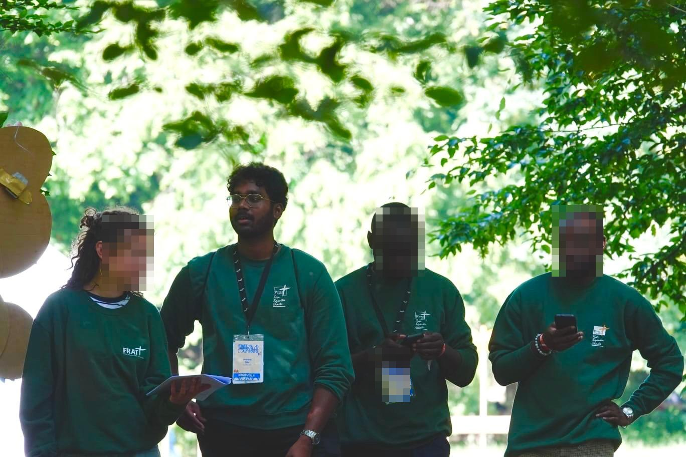
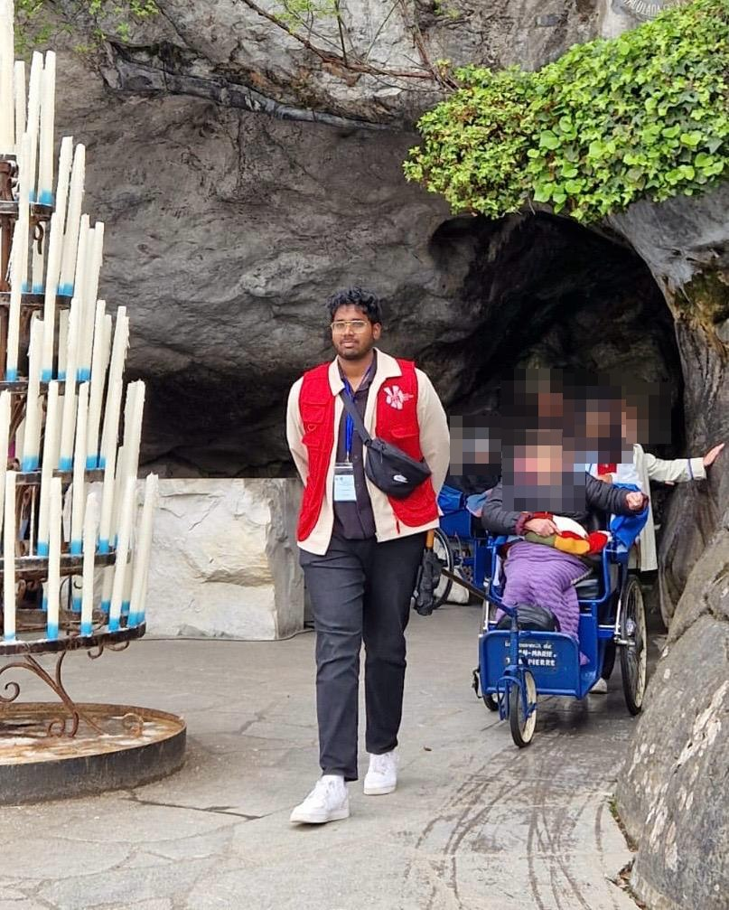

Ma définition
Coordonner et animer un collectif, c’est organiser l’action commune : répartir les rôles, planifier, informer, absorber les imprévus et maintenir l’énergie du groupe, que le collectif compte quatre développeurs ou plusieurs milliers de participants. La compétence tient moins à l’autorité qu’à la clarté : un collectif fonctionne quand chacun sait ce qu’il a à faire, pourquoi, et vers qui se tourner quand quelque chose déraille.
Le travail hybride en a fait une compétence explicitement recherchée : quand l’équipe n’est plus réunie dans la même pièce, la coordination implicite du bureau disparaît. Restent les rituels, les outils partagés et la documentation, autant de pratiques que le terrain associatif, où les équipes sont par nature dispersées et bénévoles, enseigne de longue date.
Mes éléments de preuve
Co-organiser un rassemblement d’environ 12 000 jeunes
{kind=link}

Au sein du diocèse de Saint-Denis, j’ai participé à l’organisation du FRAT à Jambville, un rassemblement d’environ 12 000 jeunes : animation d’équipes d’accompagnateurs, logistique de groupes, gestion des flux et des imprévus en temps réel, sur plusieurs jours.
Résultat : des délégations arrivées, logées, encadrées et reparties sans incident majeur, édition après édition.
Ma valeur ajoutée : garder calme et méthode à une échelle où l’improvisation ne pardonne pas : anticiper, déléguer clairement et traiter les imprévus sans les transmettre en panique aux équipes.
Conduire une équipe de brancardiers sur le terrain
{kind=link}

Lors de pèlerinages à Lourdes, j’ai été responsable d’une équipe de brancardiers au service de personnes malades ou à mobilité réduite : planification des rotations, consignes de sécurité, adaptation permanente aux besoins de personnes fragiles.
Résultat : des journées entières de prise en charge assurées sans rupture de service, avec une équipe restée engagée malgré la fatigue.
Ma valeur ajoutée : l’exemplarité comme mode de management : être le premier au brancard donne le droit de demander beaucoup aux autres.
Déployer une plateforme pour trois communautés aux besoins différents
La mise en service de la plateforme multi-sites paroissiale a exigé de coordonner les responsables des trois paroisses : recueillir des besoins parfois divergents, arbitrer ce qui serait commun et ce qui resterait propre à chaque site, planifier le déploiement et former les contributeurs de chaque communauté.
Résultat : trois sites lancés avec des équipes formées, et des arbitrages acceptés parce qu’expliqués en amont.
Ma valeur ajoutée : avoir traduit les divergences en décisions partagées : le projet technique a avancé parce que le collectif humain était aligné.
Mon autocritique
Mon niveau de maîtrise : 7,5/10, éprouvé sur des collectifs de toutes tailles, du quatuor de projet étudiant (chef d’équipe en BTS comme au baccalauréat) au rassemblement de plusieurs milliers de personnes.
Sa place dans mon profil : distinctive : peu de profils techniques ont animé des collectifs de cette ampleur. Elle prépare naturellement les rôles de coordination technique à venir.
Ma vitesse d’acquisition : une construction lente et volontaire, sur des années d’engagement associatif. Cette compétence ne s’apprend ni dans un livre ni dans un sprint.
Mon recul : une équipe informée est une équipe autonome : sur-communiquer les décisions coûte quelques minutes et économise des heures. Et l’exemplarité entraîne toujours mieux que l’autorité.
Mon évolution dans cette compétence
L’enjeu des prochaines années est la transposition : porter cette compétence, née sur le terrain associatif, vers la coordination d’équipes techniques, avec un rôle de lead developer en ligne de mire à moyen terme et un niveau visé de 8/10.
- Me former aux méthodes agiles (Scrum) pour outiller la coordination de projet logiciel.
- Prendre en charge l’animation de réunions techniques et de démonstrations en entreprise.
- Commencer à mentorer des plus jeunes, étudiants ou nouveaux arrivants, pour apprendre à faire grandir et pas seulement à organiser.
Réalisations rattachées
Les réalisations qui mettent cette compétence en œuvre, issues de la matrice compétences ↔ réalisations du portfolio.
-
Projet personnel
R3 — Plateforme web multi-sites pour un réseau paroissial
CMS custom développé seul de A à Z pour trois paroisses : back-office multi-rôles, CRUD complet et calendrier liturgique généré dynamiquement.
- PHP
- MySQL
- CMS custom
- RGPD
Dans la constellation du portfolio
Le schéma ci-dessous replace cette page dans la navigation circulaire du portfolio : chaque nœud est un lien cliquable.